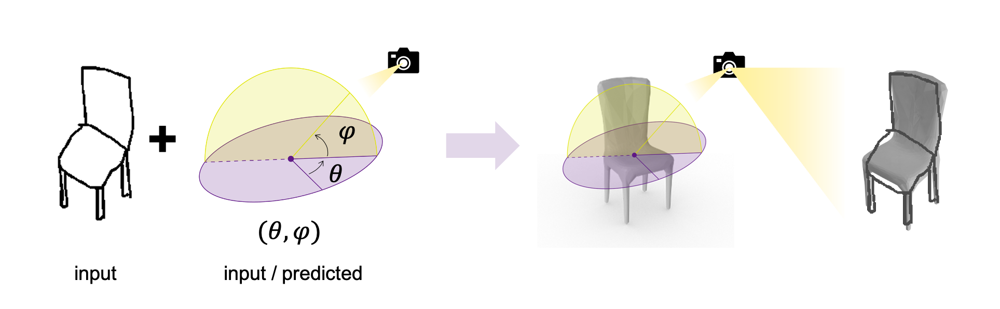
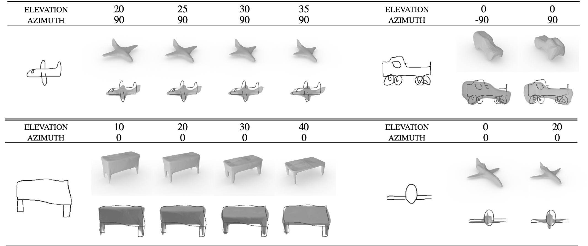
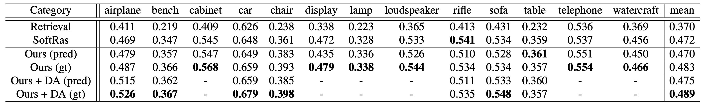
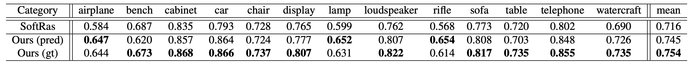

Abstract
We investigate the problem of generating 3D meshes from single free-hand sketches, aiming at fast 3D modeling for novice users. It can be regarded as a single-view reconstruction problem, but with unique challenges, brought by the variation and conciseness of sketches. Ambiguities in poorly-drawn sketches could make it hard to determine how the sketched object is posed. In this paper, we address the importance of viewpoint specification for overcoming such ambiguities, and propose a novel view-aware generation approach. By explicitly conditioning the generation process on a given viewpoint, our method can generate plausible shapes automatically with predicted viewpoints, or with specified viewpoints to help users better express their intentions. Extensive evaluations on various datasets demonstrate the effectiveness of our view-aware design in solving sketch ambiguities and improving reconstruction quality.
Problem Setting
The figure bellow illustrates our proposed view-aware setting, where the user inputs a free-hand sketch, and optionally a viewpoint. The viewpoint describes which angle the object is sketched from, and can also come from network prediction. The output is a 3D mesh. It would match the input sketch at the viewpoint.
View-Aware Property
Our method outputs different shapes according to different input viewpoints, and ensures consistent silhouettes at these viewpoints. Take the table for example. If seen from the side of the table, with a small elevation angle, the synthesized result will have a thick top and short legs. As the elevation angle gets larger, the tabletop gets thinner and the legs become longer, to satisfy the silhouette constraint.
3D Modeling Results
Here shows some 3D modeling results on our collected ShapeNet-Sketch dataset (with predicted viewpoints).

ShapeNet-Sketch Dataset
To further evaluate our method, we collect a ShapeNet-Sketch dataset containing 1,300 free-hand sketches drawn by novice users, and their corresponding 3D models. The dataset is available on Google Drive to inspire further research. For more details, we refer to the README document contained in the dataset.
Here we show the mean voxel IoU scores on the ShapeNet-Sketch testset, comparing to baseline methods.
 We also show comparisons on 2D IoU scores, to demonstrate how well the output shape matches the input sketch. Video
Citation
@inproceedings{zhang2021sketch2model,
title={Sketch2Model: View-Aware 3D Modeling from Single Free-Hand Sketches},
author={Zhang, Song-Hai and Guo, Yuan-Chen and Gu, Qing-Wen},
booktitle={Proceedings of the IEEE/CVF Conference on Computer Vision and Pattern Recognition},
pages={6012--6021},
year={2021}
}